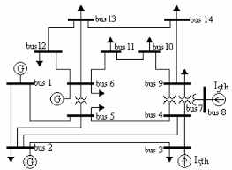
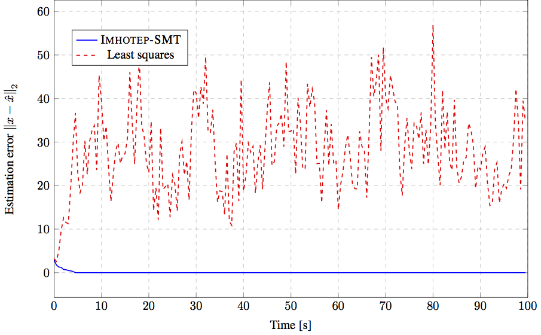

Imhotep-SMT
Novel SMT solver for secure state estimation
Example 1: Securing an Unmanned Ground Vehicle
This is an example of using Imhotep-SMT in estimating the state of an Unmanned Ground Vehicle (UGV) while one of its sensors is under attack.
The Matlab files for this example can be downloaded from here.
Example 2: Active Cruise Control
In this example, we show how Imhotep-SMT can be used to securely estimating the state of a driving car while performing active cruise control. The simulation consists of two leader cars followed by two followers cars. The follower cars are under sensor attacks. One of the cars (blue) uese Imhotep-SMT to estimate the state while the other follower car (red) uses standard least squares estimator. The simulation uses a 3D virtual reality simulator to show the perfromance of the two estimators. The simulation is currently restricted to the case when the cars are driving in straight lines.
The Matlab files for this example can be downloaded from here.
Example 3: IEEE 14-bus Power Grid
  This is an example of using Imhotep-SMT in estimating the state of the IEEE 14-bus power network. The bus composed of 5 synchronous generators and 14 buses. The state of each generator includes rotor angle and frequency. The overall system has 35 sensors: 14 sensors measure the real power injections at every bus, 20 sensors measure the real power flows along every branch, and one sensor measures the rotor angle of generator number 1. In this simulation, the attacker is assumed to pick a random set of 14 sensors. We compare the efficiency of Imohtep-SMT by comparing its estimation error with respect to the estimation error of a classical least squares estimator.
The Matlab files for this example can be downloaded from here.
Example 4: Random, Large Scale Systems
To assess the scalability of Imhotep-SMT, we randomly generated a set of matrices for systems of increasing size. For each of these systems, we configured Imohtep-SMT, provided it with the system inputs and outputs for state estimation, and recorded the execution time. In the first experiment, we fix the number of sensors $p = 20$ and increase the number of system states from $n = 10$ to $n = 150$. In the second experiment, we fix the number of states n=50 and increase instead the number of sensors from $p = 3$ to $p = 150$. In both cases, half of the sensors are attacked. As a result, increasing n has a small effect on the overall execution time, which reflects the fact that the number of constraints to be satisfied does not depend on $n$. Conversely, as the number of sensors increases, the number of constraints increases, hence the execution time of Imhotep-SMT.
The Matlab files for this example can be downloaded from here.